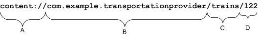

ContentProviders存储和检索数据，通过它可以让所有的应用程序访问到，这也是应用程序之间唯一共享数据的方法。不用管这个应用程序暴露的数据是如何存储的，或者是使用数据库还是使用文件，还是通过网上获得，这些一切都不重要，重要的是外界可以通过这一套标准及统一的接口和这个程序里的数据打交道。
么如何将应用程序的数据暴露出去？
要想使应用程序的数据公开化，可通过2种方法：创建一个属于你自己的Content provider或者将你的数据添加到一个已经存在的Content provider中，前提是有相同数据类型并且有写入Content provider的权限。
其中ContentProvider负责
一个程序可以通过实现一个ContentProvider的抽象接口将自己的数据完全暴露出去，而且ContentProviders是以类似数据库中表的方式将数据暴露，也就是说ContentProvider就像一个“数据库”。
那么外界获取其提供的数据，也就应该与从数据库中获取数据的操作基本一样，只不过是采用URI来表示外界需要访问的“数据库”。至于如何从URI中识别出外界需要的是哪个“数据库”，这就是Android底层需要做的事情了，不在此详细说。
简要分析下ContentProvider向外界提供数据操作的接口：
query(Uri, String[], String, String[], String) insert(Uri, ContentValues) update(Uri, ContentValues, String, String[]) delete(Uri, String, String[])

A：标准前缀，用来说明一个Content Provider控制这些数据，无法改变的；
B：URI的标识，它定义了是哪个Content Provider提供这些数据。对于第三方应用程序，为了保证URI标识的唯一性，它必须是一个完整的、小写的 类名。这个标识在<provider> 元素的 authorities属性中说明：
<provider name=”.TransportationProvider” authorities=”com.example.transportationprovider” . . . >
C：路径，Content Provider使用这些路径来确定当前需要生什么类型的数据，URI中可能不包括路径，也可能包括多个；
D：如果URI中包含，表示需要获取的记录的ID；如果没有ID，就表示返回全部；
由于URI通常比较长，而且有时候容易出错，切难以理解。所以，在Android当中定义了一些辅助类，并且定义了一些常量来代替这些长字符串，例如：People.CONTENT_URI
在URI的D部分可能包含一个_ID ，这个应该出现在SQL语句中的，可以以种特殊的方式出现，这就要求我们在提供数据的时候，需要来额外关注这个特殊的信息。Android SDK推荐的方法是：在提供数据表字段中包含一个ID，在创建表时INTEGER PRIMARY KEY AUTOINCREMENT标识此ID字段。
可能还有2个问题，是需要关注的。